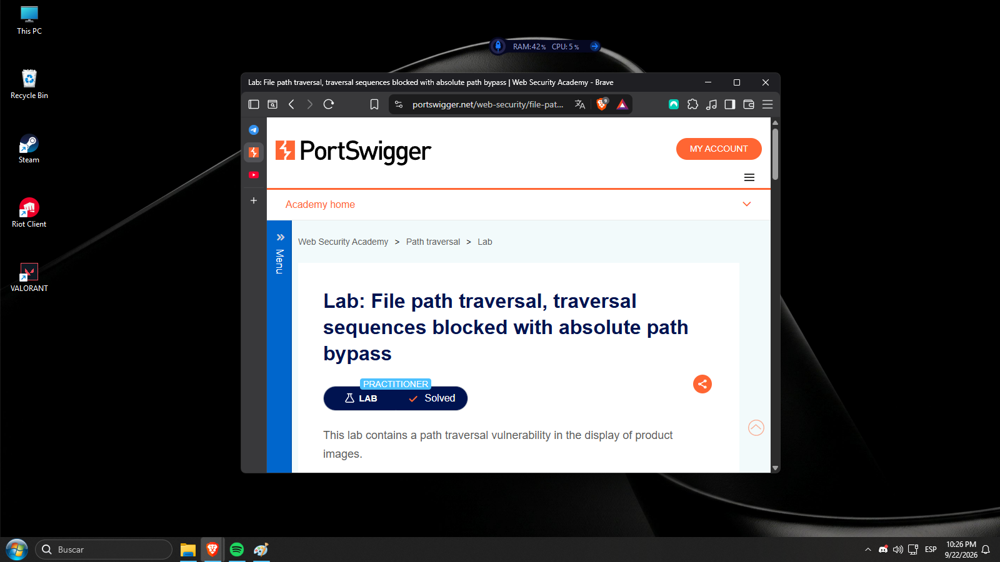

08
File path traversal, traversal sequences blocked with absolute path bypass
El laboratorio demuestra que bloquear secuencias de traversal
no es suficiente si la aplicación continúa aceptando rutas
absolutas controladas por el usuario en el parámetro
filename.
